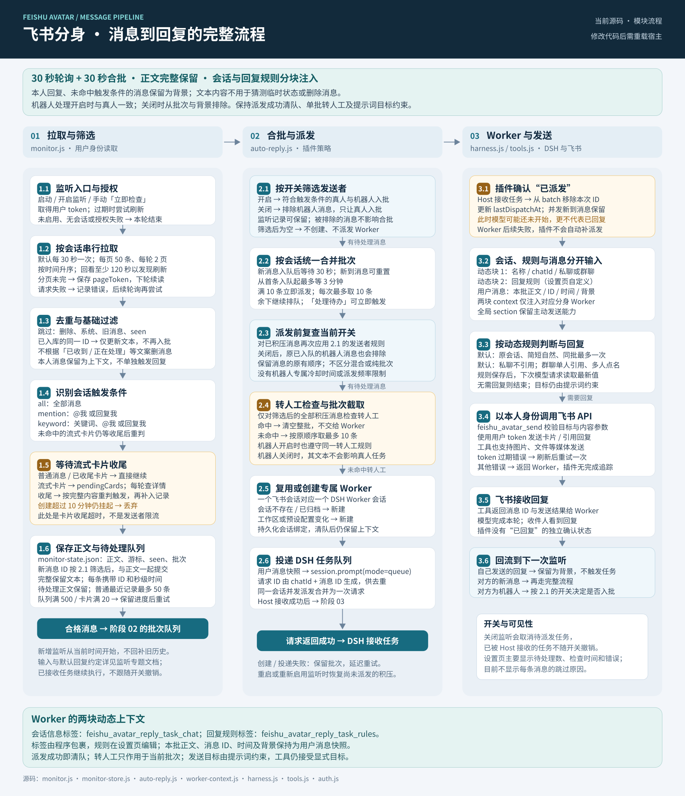

FEISHU AVATAR / DOCUMENTATION
飞书分身：从授权到自动回复
普通会话主动以本人身份读写飞书，自动 Worker 处理监听消息；两者共用授权和三个全局工具。
职责与入口
| 模块 | 负责什么 | 详细说明 |
|---|---|---|
| 设置与授权 | 应用选择、扫码、凭证维护、监听和规则配置 | 使用指南 |
| 全局工具 | 本人信息、历史读取、卡片与媒体发送 | 注册与接口 |
| 监听与派发 | 读取消息、等待卡片收尾、合批并投递 Worker | 处理规则 |
| Worker 上下文 | 会话信息与回复规则分别注入；批次正文作为用户消息 | 提示词边界 |
消息处理全流程
本页直接引用流程 SVG。打开原图

